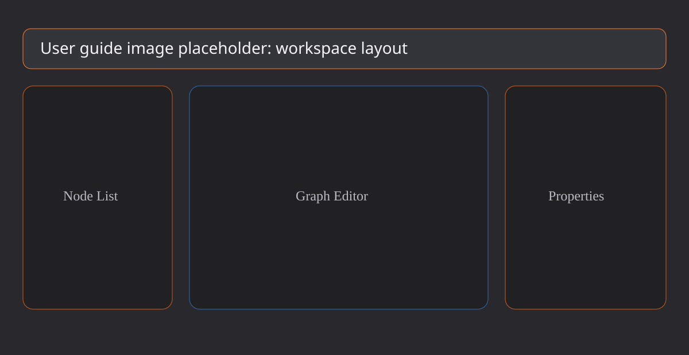
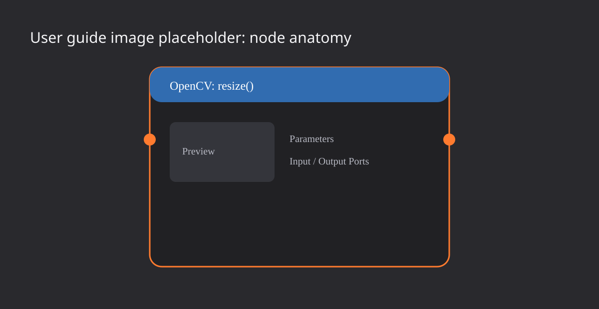

Use the CV_HUB workspace
This guide focuses on practical usage: where each panel is, what a node contains, how to connect nodes, how execution works, and how graph JSON save/load behaves.
Workspace layout
The GUI is organized into a menu bar, node list, graph editor, properties panel, and log window. The normal workflow moves from left to right: choose nodes on the left, connect them in the center, edit selected-node details on the right, and read status messages at the bottom.

Menu bar
The top bar contains Run / Stop, File, View, Settings, and an FPS indicator. Run starts execution for the current graph. Stop terminates the background worker. File provides JSON save/load. View toggles Nodes, Parameters, and Log windows. Settings controls the maximum FPS.
Node list
The left panel lists available nodes grouped by library. Clicking a node adds an instance to the graph. Multiple instances of the same function can exist at the same time; each instance receives its own stable instance ID.
Graph editor
The center area is powered by imnodes. Drag nodes to position them, connect output ports to input ports, and use the mouse wheel to zoom. Selected nodes are highlighted with an orange outline.
Properties panel
The right panel shows the selected node's preview, name, summary, and editable parameters. Detailed editing is intentionally placed here so graph nodes remain compact.
Log window
The bottom log reports start/stop events, save/load messages, and errors. Check this window first when a graph does not behave as expected.
Node anatomy
A node contains a title bar, input ports, output ports, a compact parameter area, and an optional preview. Source nodes may omit input ports. Sink nodes may omit output ports.

Title bar
Node titles follow the library:functionName() style. Running nodes use blue accents; stopped nodes use neutral gray styling.
Ports
Input ports are on the left and output ports are on the right. Type compatibility is validated before execution. Image data is represented as ImageValue and passed through shared pointers to avoid unnecessary buffer copies.
Preview
When a node produces image output, the first image output is uploaded to an OpenGL texture and displayed as a preview. Before execution, the UI shows a placeholder.
Create a graph
- Add source, transform, and sink nodes from the node list.
- Drag from an output port to an input port to connect nodes.
- Edit node parameters in the properties panel.
- Disable nodes when you want to exclude them from a run.
- Press Run and inspect previews and logs.
Graphs are treated as DAGs by default. Cycles and type mismatches are validated before execution.
Run and preview
When Run is pressed, CV_HUB builds a PipelineGraph from enabled nodes and edges, then executes it on a background worker so the UI remains responsive. Results are polled asynchronously and image previews are updated when output becomes available.
Press Stop to stop the worker. After adding nodes, changing edges, or editing parameters, run the graph again to execute the latest configuration.
Save and load
The File menu contains Save Graph... and Load Graph.... Both dialogs are limited to JSON files.
- Save Graph writes nodes, edges, positions, running state, and parameters to JSON.
- Load Graph replaces the current graph with the selected JSON file.
- The folder button next to the path text box opens the operating system's file picker.
On macOS CV_HUB uses NSOpenPanel / NSSavePanel. Windows uses IFileDialog. Linux uses zenity or kdialog when available.
Tips
- Disable parts of a graph to narrow down a processing issue.
- If previews do not update, check connections, parameters, and logs.
- Use zoom and resizable panels when graphs grow large.
- Commit graph JSON files when you want to share pipeline definitions.